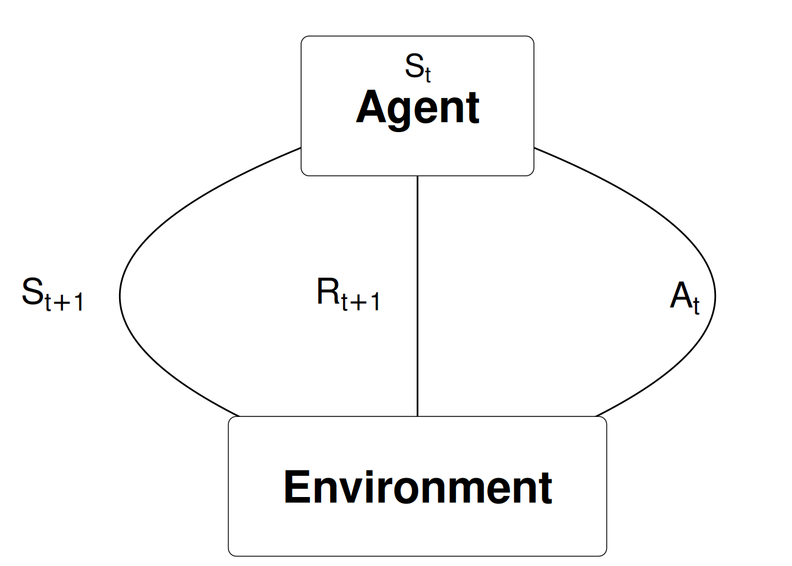
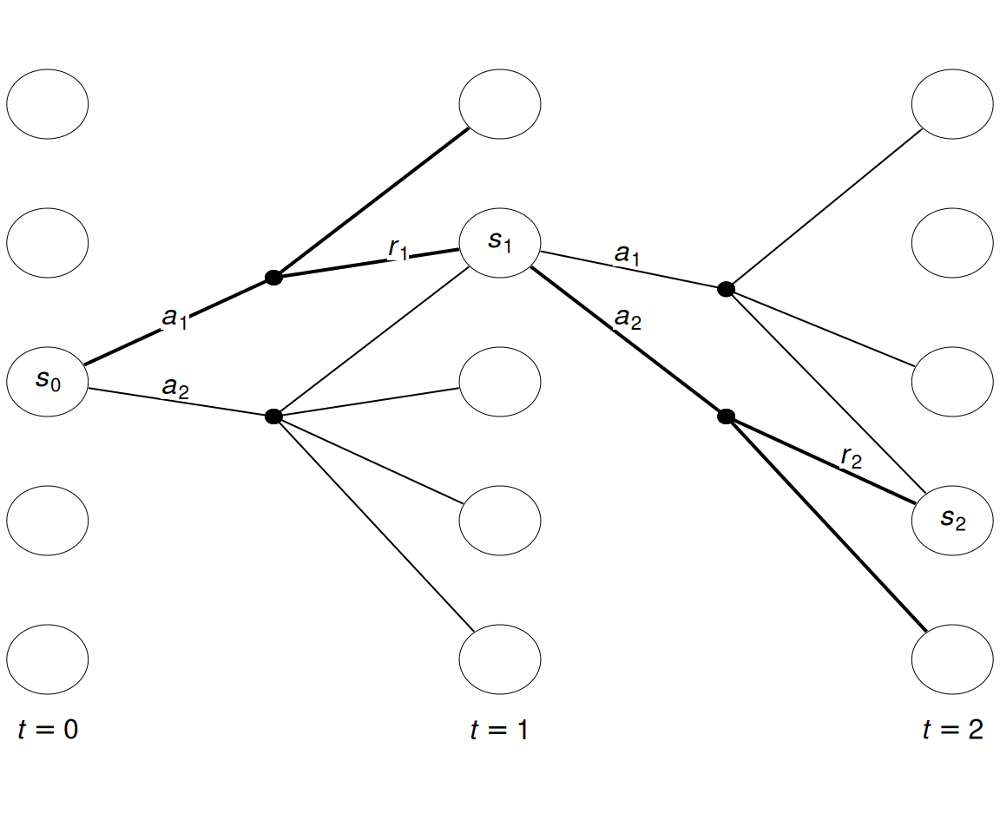
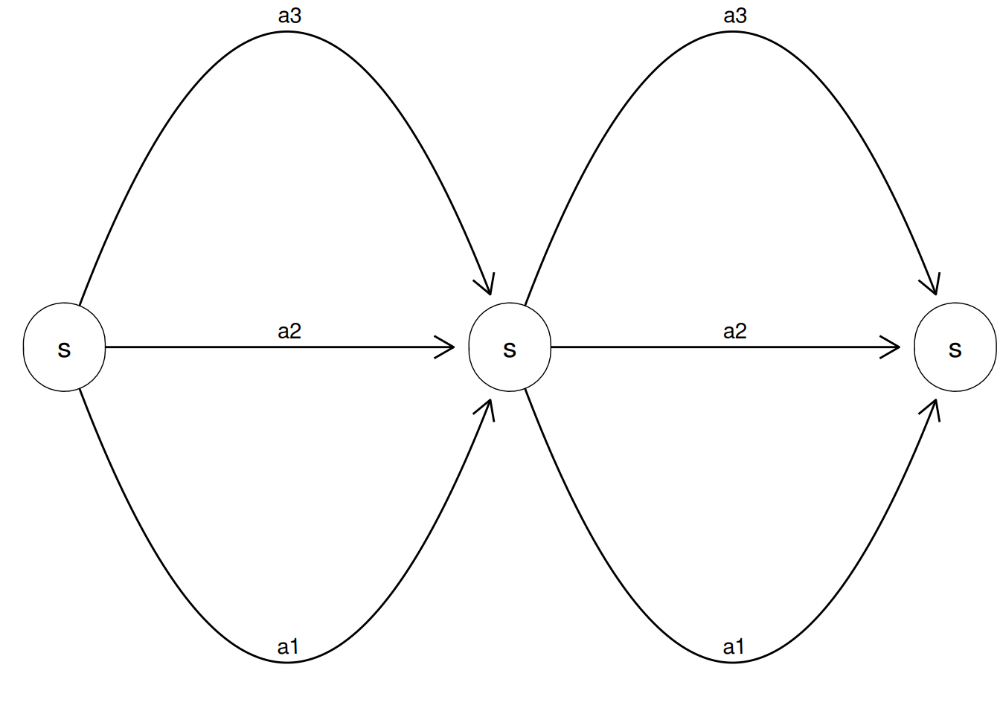

Slides for this module can be seen
here.
You do not have to look at them before the lecture!
6 Markov decision processes (MDPs)
This module gives an introduction to Markov decision processes (MDPs) with a finite number of states and actions. This gives us a full model of a sequential decision problem. MDPs are a classical formalization of sequential decision making, where actions influence not just immediate rewards, but also what will be the next state, and hence future rewards. Thus MDPs involve delayed reward and the need to consider the trade-off between immediate and delayed reward. MDPs are a mathematically idealized form of the RL problem where a full model/description is known and the optimal policy can be found. Often in a RL problem some parts of this description is unknown and we hereby have to estimate the best policy by learning. For example, in the bandit problem the rewards was unknown.
6.1 Learning outcomes
By the end of this module, you are expected to:
- Identify the different elements of a Markov Decision Processes (MDP).
- Describe how the dynamics of an MDP are defined.
- Understand how the agent-environment RL description relates to an MDP.
- Interpret the graphical representation of a Markov Decision Process.
- Describe how rewards are used to define the objective function (expected return).
- Interpret the discount rate and its effect on the objective function.
- Identify episodes and how to formulate an MDP by adding an absorbing state.
The learning outcomes relate to the overall learning goals number 2, 7, 10, and 12 of the course.
6.2 Textbook readings
Read Chapter 3-3.4 in Sutton and Barto (2018). Read it before continuing this module. You do not have to put to much focus on the examples. A summary of the book notation can be seen here.
6.3 An MDP as a model for the agent-environment
Let us recall the RL problem which considers an agent in an environment:
- Agent: The one who takes the action (computer, robot, decision maker), i.e. the decision making component of a system. Everything else is the environment. A general rule is that anything that the agent does not have absolute control over forms part of the environment.
- Environment: The system/world where observations and rewards are found.
At time step \(t\) the agent is in state \(S_t\) and takes action \(A_{t}\) and observe the new state \(S_{t+1}\) and reward \(R_{t+1}\):

Note we here assume that the Markov property is satisfied and the current state holds just as much information as the history of observations. That is, given the present state the future is independent of the past:
\[\Pr(S_{t+1} | S_t, A_t) = \Pr(S_{t+1} | S_1,...,S_t, A_t).\] That is, the probability of seeing some next state \(S_{t+1}\) given the current state is exactly equal to the probability of that next state given the entire history of states.
A Markov decision process (MDP) is a mathematical model that for each time-step \(t\) have defined states \(S_t \in \mathcal{S}\), possible actions \(A_t \in \mathcal{A}(s)\) given a state and rewards \(R_t \in \mathcal{R} \subset \mathbb{R}\). Consider the example in Fig. 6.1. Each time-step have five states \(\mathcal{S} = \{1,2,3,4,5\}\). Assume that the agent start in state \(s_0 = 3\) with two actions to choose among \(\mathcal{A}(s_0) = \{a_1, a_2\}\). After choosing \(a_1\) a transition to \(s_1 = 2\) happens with reward \(R_1 = r_1\). Next, in state \(s_1\) the agent chooses action \(a_2\) and a transition to \(s_2\) happens with reward \(r_2\). This continues as time evolves.

In a finite MDP, the sets of states, actions, and rewards all have a finite number of elements. In this case, the random variables have well defined discrete probability distributions dependent only on the preceding state and action which defines the dynamics of the system: \[\begin{equation} p(s', r | s, a) = \Pr(S_t = s', R_t = r | S_{t-1} = s, A_{t-1} = a), \end{equation}\] which can be used to find the transition probabilities: \[\begin{equation} p(s' | s, a) = \Pr(S_t = s'| S_{t-1} = s, A_{t-1}=A) = \sum_{r \in \mathcal{R}} p(s', r | s, a), \end{equation}\] and the expected reward: \[\begin{equation} r(s, a) = \mathbb{E}[R_t | S_{t-1} = s, A_{t-1} = a] = \sum_{r \in \mathcal{R}} r \sum_{s' \in \mathcal{S}} p(s', r | s, a). \end{equation}\]
That is, to define an MDP the following are needed:
- A finite number of states and actions. That is, we can store values using tabular methods.
- All states \(S \in \mathcal{S}\) and actions \(A \in \mathcal{A}(s)\) are known.
- The transition probabilities \(p(s' | s, a)\) and expected rewards \(r(s, a)\) are given. Alternatively, \(p(s', r | s, a)\).
Moreover, for now a stationary MDP is considered, i.e. at each time-step all states, actions and probabilities are the same and hence the time index can be dropped.
6.4 Rewards and the objective function (goal)
The reward hypothesis is a central assumption in reinforcement learning:
All of what we mean by goals and purposes can be well thought of as the maximisation of the expected value of the cumulative sum of a received scalar signal (called reward).
This assumption can be questioned but in this course we assume it holds. The reward signal is our way of communicating to the agent what we want to achieve not how we want to achieve it.
The return \(G_t\) can be defined as the sum of future rewards; however, if the time horizon is infinite the return is also infinite. Hence we use a discount rate \(0 \leq \gamma \leq 1\) and define the return as
\[\begin{equation} G_t = R_{t+1} + \gamma R_{t+2} + \gamma^2 R_{t+3} + \cdots = \sum_{k=0}^{\infty} \gamma^k R_{t+k+1} \end{equation}\]
Discounting is important since it allows us to work with finite returns because if \(\gamma < 1\) and the reward is bounded by a number \(B\) then the return is always finite:
\[\begin{equation} G_t = \sum_{k=0}^{\infty} \gamma^k R_{t+k+1} \leq B \sum_{k=0}^{\infty} \gamma^k = B \frac{1}{1 - \gamma} \end{equation}\]
Note gamma close to one put weight on future rewards while a gamma close to zero put weight on present rewards. Moreover, an infinite time-horizon is assumed.
An MDP modelling a problem over a finite time-horizon can be transformed into an infinite time-horizon using an absorbing state with transitions only to itself and a reward of zero. This breaks the agent-environment interaction into episodes (e.g playing a board game). Each episode ends in the absorbing state, possibly with a different reward. Each starts independently of the last, with some distribution of starting states. Sequences of interaction without an absorbing state are called continuing tasks.
The objective function is to choose actions such that the expected return is maximized. We will formalize this mathematically in the next module.
6.5 Summary
- MDPs formalize the problem of an agent interacting with an environment.
- The agent and environment interact at discrete time steps.
- At each time, the agent observes the current state of the environment. Then selects an action and the the environment transitions to a new state with a reward.
- An agent’s choices have long-term consequences (delayed reward).
- Selected actions influences future states and rewards.
- The objective is to maximize the expected discounted return.
- With a discount rate less than one, we can guarantee the return remains finite.
- The value of the discount rate defines how much we care about short-term rewards versus long-term rewards.
- A first step in applying reinforcement learning is to formulate the problem as an MDP.
6.6 Exercises
Below you will find a set of exercises. Always have a look at the exercises before you meet in your study group and try to solve them yourself. Are you stuck, see the help page. Sometimes hints and solutions can be revealed. Beware, you will not learn by giving up too early. Put some effort into finding a solution!
All these exercises can be solved analytically without Python.
6.6.1 Exercise - Sequential decision problems
Think of two sequential decision problems and try to formulate them as MDPs. Describe the states, actions and rewards in words.
WarningSolutionExamples could be:
- Ludo - State: position on the board. Actions: Possible movements. Rewards: In a win state e.g. 1, in a loose state -1 and 0 otherwise.
- Inventory management - State: inventory level. Actions: Order \(x\) units, wait. Rewards: a negative number representing inventory holding cost plus ordering cost.
- Investment - State: current portfolio, KPI’s from considered companies. Actions: Buy/sell \(x\) stocks of company \(y.\) Rewards: returns - costs.
How do the states, actions and rewards look like for the bandit problem? Try drawing the state-expanded hypergraph.
WarningSolutionFor the k-bandit problem we only have a single state representing before we chose an action. We have \(k\) actions and the rewards are the probability distribution from each slot machine. Note the k-bandit problem is trivial if we know the MDP, since then we know the expected reward of each action and hence the action with best expected reward will be optimal.

6.6.2 Exercise - Expected return
Suppose \(\gamma=0.8\) and we observe the following sequence of rewards: \(R_1 = -3\), \(R_2 = 5\), \(R_3=2\), \(R_4 = 7\), and \(R_5 = 1\) with a finite time-horizon of \(T=5\). What is \(G_0\)? Hint: work backwards and recall that \(G_t = R_{t+1} + \gamma G_{t+1}\).
WarningSolutiongam = 0.8 g = 0 r = [-3, 5, 2, 7, 1] print(f't = 5 G_5 = {g}') #> t = 5 G_5 = 0 for i in range(4, -1, -1): g = r[i] + gam * g print(f't = {i} G_{i} = {g}') #> t = 4 G_4 = 1.0 #> t = 3 G_3 = 7.8 #> t = 2 G_2 = 8.24 #> t = 1 G_1 = 11.592 #> t = 0 G_0 = 6.2736Suppose \(\gamma=0.9\) and we observe rewards: \(R_1 = 2\), \(R_t = 7\), \(t>1\) given a infinite time-horizon. What is \(G_0\) and \(G_1\)? Hint: recall that \(\sum_{k=0}^\infty x^k = 1/(1-x)\).
WarningSolutionNote \[\begin{align}G_1 &= R_{t+1} + \gamma G_{t+1} \\ &= 7 + \gamma G_{t+1} \\ &= 7 + \gamma (7 + \gamma G_{t+2}) \\ &= 7(1 + \gamma + \gamma^2 + \ldots) \\ &= 7\sum_{k=0}^\infty 0.9^k \\ &= \frac{7}{1-0.9}\end{align}\]
G_1 = 7 * 1/(1-0.9) print(G_1) #> 70.00000000000001 G_0 = 2 + 0.9 * G_1 print(G_0) #> 65.00000000000001
6.6.3 Exercise - Gambler’s problem
A gambler has the opportunity to make bets on the outcomes of a sequence of coin flips. The coin may be an unequal coin where there is not equal probability \(p_H\) for a head (H) and a tail (T). If the coin comes up heads, the gambler wins as many dollars as he has staked on that flip; if it is tails, he loses his stake. The game ends when the gambler reaches his goal of a capital equal 100, or loses by running out of money. On each flip, the gambler must decide what portion of his capital to stake, in integer numbers of dollars. This problem can be formulated as an undiscounted, episodic, finite MDP, where we assume that the gambler starts with a capital \(0 < s_0 < 100\).
Define the state space \(\mathcal{S}\). Which states are terminal states?
WarningSolutionCapital of the gambler: \[\mathcal{S} = \{0, \ldots, 100 \}.\] Terminal states are 0 and 100 (loose or win).
Define the action space \(\mathcal{A}(s)\).
WarningSolutionGiven his capital choose to gamble \(a\): \[\mathcal{A}(s) = \{ a\in \mathcal{S} | 0 \leq a \leq \min(s, 100-s) \}.\]
Let \(R_a\) denote the reward given bet \(a\) (a stochastic variable). Calculate the expected rewards. If the state-value for the terminal states is set to zero, what do the state-value of a policy mean?
WarningSolutionThe expected reward is: \[r(s,a) = \mathbb{E}[R_a] = p_H a\] where \(p_H\) denote the probability of head. The state-value denote the expected reward.
Let \(R_a\) be zero for all bets \(a\) and set the state-value for the terminal state 0 to zero and for state 100 to one. What do the state-value of a policy mean?
WarningSolutionSince \(r(s,a) = 0\) for all states and actions, the state-value is the probability of winning.
Calculate the transition probabilities.
WarningSolutionIf \(C\) denote a Bernoulli variable equal 1 if head. Then \[p(s' | s, a) = \Pr(s' = s + Ca - (1-C)a).\] Hence there are two transitions: if \(s' = s - a\) then \(p(s' | s, a) = 1-p_H\) and if \(s' = s + a\) then \(p(s' | s, a) = p_H\).
Write an alternative MDP model having only a single absorbing state representing “game over” and let the objective be the probability of winning. That is, state 0 and 100 are not absorbing states in this case.
WarningSolutionStates
We add state 101 representing “game over” \[\mathcal{S} = \{0, \ldots, 100, 101 \}.\] Terminal state is now 101 (game over).
Actions
If \(s\leq 100\) then \[\mathcal{A}(s) = \{ a\in \mathcal{S} | 0 \leq a \leq \min(s, 100-s) \}.\] If \(s = 101\) then \(A(101) = \{d\}\) (dummy action).
Rewards
The expected reward is \(r(s,a) = 0 for 0 \leq s < 100, a\in A(s)\), \(r(100,0) = 1\) and \(r(101,d) = 0\).
Transition probabilities
For \(0 < s < 100\) we have that \[\begin{align} p(s' | s, a) = 1-p_H \qquad &\text{if } s' = s - a\\ p(s' | s, a) = p_H \qquad &\text{if } s' = s + a \end{align} \] Moreover, we have transitions to the absorbing state as: \(p(101 | 0, 0) = p(101 | 100, 0) = 1\) and \(p(101 | 101, d)\). Note that using this model, we do not need to set the state-value of the absorbing state.
6.6.4 Exercise - Factory storage
A factory has a storage tank with a capacity of 4 \(\mathrm{m}^{3}\) for temporarily storing waste produced by the factory. Each week the factory produces \(0,1\), 2 or 3 \(\mathrm{m}^{3}\) waste with respective probabilities \[p_{0}=\displaystyle \frac{1}{8},\ p_{1}=\displaystyle \frac{1}{2},\ p_{2}=\displaystyle \frac{1}{4} \text{ and } p_{3}=\displaystyle \frac{1}{8}.\] If the amount of waste produced in one week exceeds the remaining capacity of the tank, the excess is specially removed at a cost of $30 per cubic metre. At the end of each week there is a regular opportunity to remove all waste from the storage tank at a fixed cost of $25 and a variable cost of $5 per cubic metre.
The problem can be modelled as a finite MDP where a state denote the amount of waste in the tank at the end of week \(n\) just before the regular removal opportunity.
Define the state space \(\mathcal{S}\).
WarningSolution\[\mathcal{S} = \{ 0,1,2,3,4 \}\]
Define the action space \(\mathcal{A}(s)\).
WarningSolutionLet \(e\) and \(k\) denote empty and keep the waste from the tank. Then the action space is \[\mathcal{A}(s) = \{ e, k \}.\]
Calculate the expected rewards \(r(s,a)\).
WarningSolutionThe expected cost of a given state and action is the cost of empting the container and the expected cost of a special removal during the next week. Hence \[r(s, e) = -(25 + 5s)\]and\[r(s,k) = -30\sum_{i>4-s} (s+i-4)p_i\]
Calculate the transition probabilities \(p(s'|s,a)\).
WarningSolutionThe transition probabilities are: \[p(s'|s,k) = p_{s'-s}\text{ if } s\leq s' \leq 3\] \[p(4|s,k) = \sum_{i\geq 4-s} p_i\] \[p(s'|s,e) = p_{s'}\text{ if } 0\leq s' < 4\] \[p(s'|s,a) = 0 \text{ otherwise.}\]